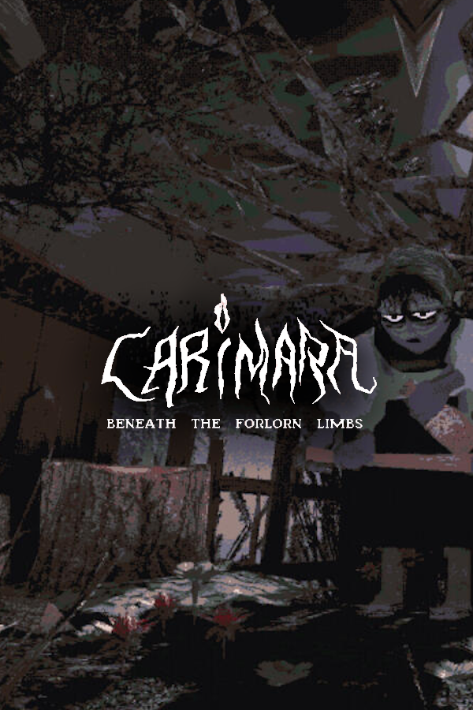

Carimara: Beneath The Forlorn Limbs
Every archived year-end list appearance, including placement and points earned.
About the Game
I had a blast creating this little game. It's a short experience, and I hope the secrets and little surprises I hid in it will stay with you for a long time!- Bastinus RexYou are the Carimara. Small, mute, sorcerous. Born of moss and mirrorlight, skilled only in the art of asking. Wandering a house stitched from grief and riddles; you don't speak, you don’t chant, you don’t fight. You hold the house by its dead hands and conjure questions from dust, from bone, from whatever’s left behind. Be careful not to press too far, or wake you might, what's sealed afar. You Are Mute, But You Have A Gift Of Conjuring QuestionsYou speak through cards with glyphs long lost, in halls where kindness hides its cost.Some smile, some sneer, some simply stare, but all who watch know you are there.Every Object Is A MemoryWithin these walls, let silence guide, where cards bloom from what things once hide.Ask gently now, with ghostly touch. Some secrets crack when pressed too much.A Stillness Dressed In Dust And FlameCandlelight flickers on furniture worn, in rooms where silence was weathered and torn. It waits in the gloom with a breath held tight, a hush that has lingered far past the night.A Tale In Threads Of Quiet DreadNo blades to swing, no foes to fight. Just riddles wrapped in candlelight.For those who seek what lies askew, where stories murmur back to you.
| Released | 2025-10-06 |
|---|---|
| Developer | Bastinus Rex |
| Publisher | CRITICAL REFLEX |
| Genres | Adventure, Casual, Indie |
| Platforms | macOS, PC |
SingleplayerSteam AchievementsAtmosphericStory RichFirst-PersonHorrorExplorationDarkMysteryChoices Matter3DCinematic
Where to Buy
Game information provided by RAWG.
Points by Year
List History
| Year | Source | List | Placement | Points |
|---|---|---|---|---|
| 2025 | Inverse | The 25 Best Games Of 2025, Ranked | 14 | 3 |